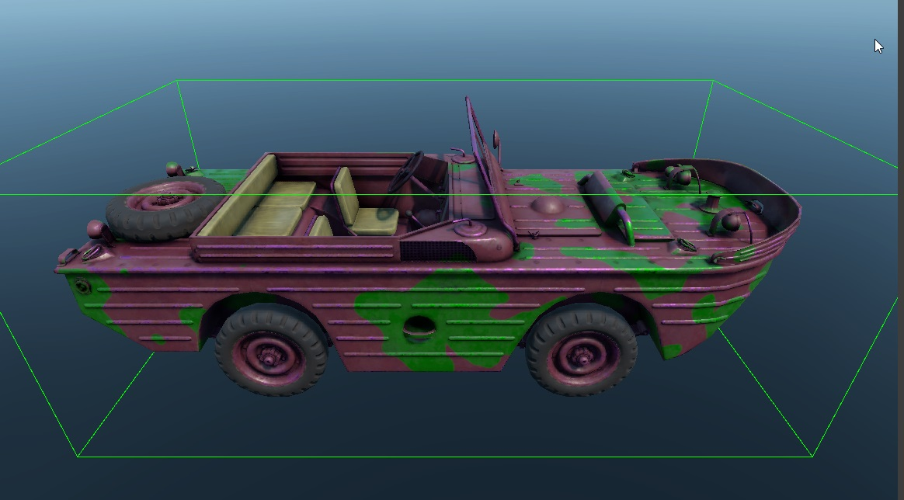

dynamic_painted_by_mask
Overview
A dynamic shader designed for vehicles in daNetGame-based projects.
Textures
tex0: Diffuse albedo
tex2: Normals + metalness + smoothness
tex4: Grayscale paint mask (white = 100% paint coverage, black = no paint)
tex5: Optional grayscale camouflage mask (white = painted with the second color, black = no paint)
Parameters
script:t="primary_color=0,0,0,0"– Defines the primary paint color based on the mask from tex4. The first three values represent the RGB color; the fourth value is unused.script:t="secondary_color=0,0,0,0"– Defines the secondary paint color based on the mask from tex5. The first three values represent the RGB color; the fourth value is unused.
Functionality
If only one mask and one color are specified, the shader will apply the paint based on that mask. For example:
{kind=link}
When both masks and two colors are provided, the shader can generate camouflage patterns in any color combination. For example:
{kind=link}
The color defined in the asset will be applied to all vehicles of this type unless it is overridden in the templates.
Predefined color sets and random color generation in-game are configured in
.blk files located in:
<project_name>/prog/gameBase/content/<project_name>/gamedata/templates/.
For example, predefined color sets:
vehicle_color_smoking_red value:p4=0.6, 0.105, 0.117, 1.0
vehicle_color_vampire_red value:p4=0.419, 0.039, 0.074, 1.0
vehicle_color_canyon_copper value:p4=0.807, 0.341, 0.184, 1.0
The following block indicates that there is a 90% chance the vehicle will be painted in one of the four specified colors:
ar_painting.chance:r=0.9
"car_painting.possibleColors:array"{
"item:object"{ color:t="vehicle_color_battleship_gray"; }
"item:object"{ color:t="vehicle_color_dark_gray"; }
"item:object"{ color:t="vehicle_color_thundercloud"; }
"item:object"{ color:t="vehicle_color_military_green"; }
}